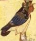
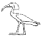
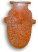
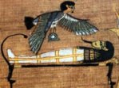
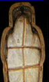
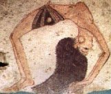

The dead man is at one and the same time in heaven,
in the god's boat [Re, the sun-god's, celestial barge], under the earth, tilling
the Elysian fields, and in his tomb enjoying his victuals. -- Ancient
Egypt, Lionel Casson
In
Egypt one person could have multiple afterlives - each different part of the
person would be able to have its own existence after death, if they survived the
trials of the underworld and the Osirian judgement of the dead with all of their magic
spells. It was then that the Ka and Ba - which until then had lead seperate
existances - joined to become the Akhu.
 The multiplicity of Egyptian thought is so different from the traditional,
Christian view of western thought that it can be hard to imagine.
The multiplicity of Egyptian thought is so different from the traditional,
Christian view of western thought that it can be hard to imagine.
An interesting point to note is that the Egyptians believed that animals, plants, water and even stones had their own Ka. A human's Ka could move around while a person slept, and even inhabit a plant if the Ka so desired, rather than the human. The Ka could manifest itself, as a ghost, to others, both when the person it was 'born' with was dead or a live. It was even thought to haunt those who did wrong to it - if family failed to make proper offerings, the starving and thirsty Ka would haunt them until they corrected this error!

The Egyptians mummified their bodies because their physical form was an integral part to their afterlife. Being such a practical people, liking what they could see and touch, an existence without a physical body was unacceptable to them. Even the destruction of the heart (the spiritual Yb rather than the physical heart) would mean the death of all of the other parts of the being, but it meant that the physical heart was preserved along with the physical body. Other rituals point to the importance of the physical body after death - the Opening of the Mouth ceremony allowed the body to breath, while other rituals were performed on the corpse to allow the deceased to see and hear in the Land of the West.Death was a complex affair. Originally this was only for the pharaoh, but the rich soon believed that they could take part in the afterlife, and eventually the poor believed they could join the ranks of the blessed dead. Other reasons for the complexity of life after death came from the Egyptian way of clinging to ideas, rather than discarding them when new ideas came along. The intermingling of peoples, the different religious ideas and cults all were incorporated into the Egyptian belief system, giving rise to this elaborate belief system.

From the monuments and papyrus scrolls and tombs left today, it's no wonder that Egyptians were thought to have focused their lives around death! But the Egyptians, like any other people, enjoyed life, and did not look forward to death. They followed the maxim "live life not that thou shalt die" - partying and generally trying to enjoy life. But death, to the Egyptians, was a somewhat better version of their current life. They would eat, drink and share good companionship in the stars or in the Land of the West. They would have servants to do their chores for them. Life, after death, would be ideal.The only problem was that there was no guarantee that they would actually get to the afterlife, and there was always the threat of their names, physical bodies or images being destroyed, killing their multiple parts in the process. Spells, prayers, tomb paintings and statues could help, but if everything was obliterated, then they died, too.
No wonder the Egyptians lived their lives to the fullest!